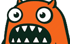
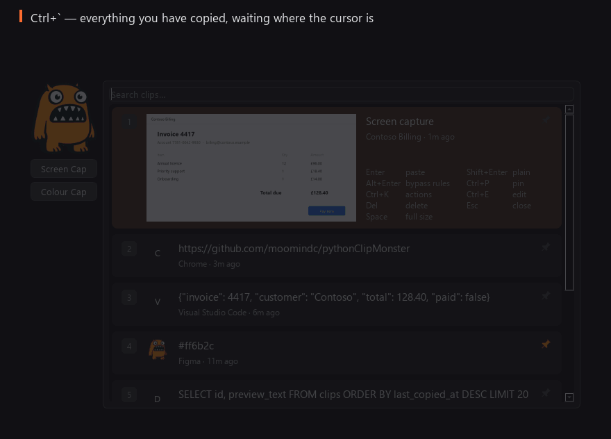
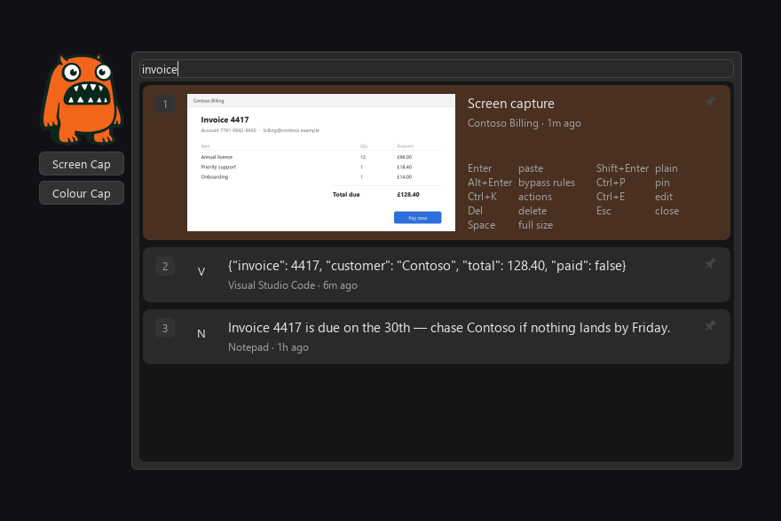
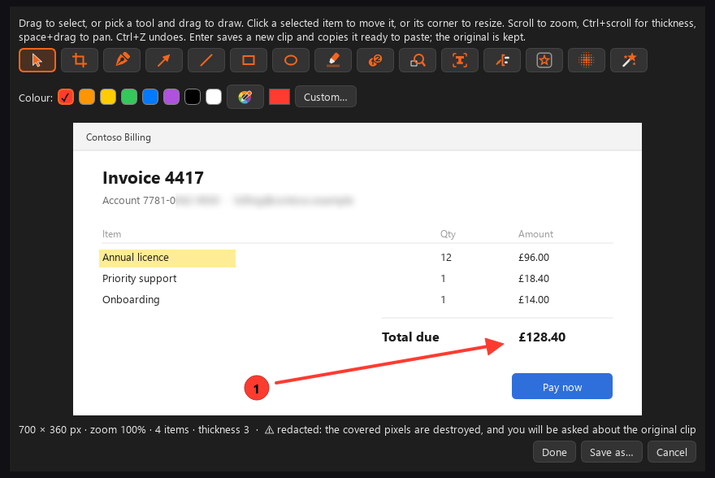
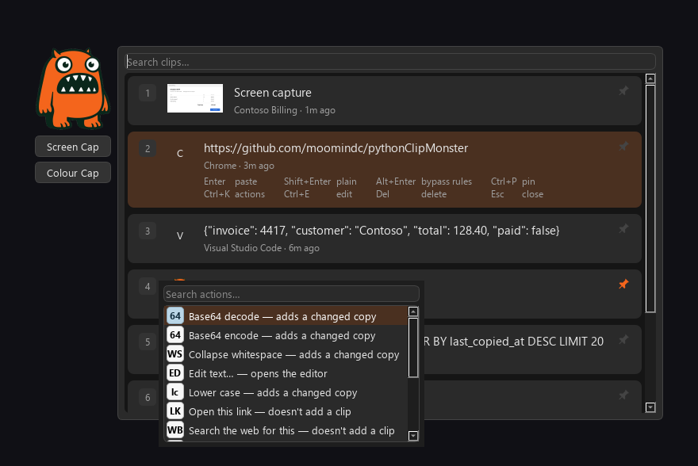

Folders & tags
File clips away with in:"work" and tag:invoice, then pull them back with the same filters.
Windows · Python · PySide6 · v1.0 · 2026
A clipboard manager that remembers everything you copy (that you want it too), finds it again, and gets out of the way. With screen capture, a real annotation editor, a colour picker, and an action system you can read and change.


01 · Remember
One hotkey brings up everything you have copied, newest first, right where the cursor is. Every clip is typed as it arrives and searchable word by word.
Pin what you keep coming back to and it stays at the top, exempt from the retention sweep.
Images are read with OCR in the background, so typing invoice finds the picture of one. A capture also wears the icon of the app it is a picture of, so a row tells you where it came from at a glance.

02 · Capture

Region, window, whole screen — or scrolling: hover to highlight the pane you want, click, and ClipMonster drives that window's own scrollbar and stitches the frames into one picture taller than the screen. It measures from the pixels how far each scroll actually moved, and stops rather than guessing when it cannot tell. All DPI-correct across mixed-scale monitors.
The result stays re-editable: reopen the clip later and every arrow is still an object you can move, restyle or delete.
A blur is flattened into the pixels and the original pixels are gone from the new clip. ClipMonster offers to delete the un-redacted original it came from, so moving the blur later uncovers nothing.
Capture works four ways: region (drag a rectangle anywhere on screen), window (hover to highlight, click to grab it), screen (the whole monitor, correctly scaled) and scrolling (stitches a whole page into one tall image). Press R, W, S or L after the capture hotkey.
03 · Transform
Every action is a .toml plus a script in %LOCALAPPDATA%\ClipMonster\ClipMonster\actions. Seventeen ship with it, one script per action, all yours to edit or use to create your own in any language or scripting tool.
Run them from the command palette (Ctrl+K), or let them run by themselves on copy, paste, capture or colour once you switch that on.

Paste rules
Paste rules turn the same clip into plain text for a terminal and a TSV table for Excel, without storing anything extra. The popup's footer tells you which rule will apply before you press Enter.
Colour picker
Press Ctrl+Shift+Alt+C, click a pixel, and the colour lands in your history — typed as a colour, searchable, and available to actions.
04 · Organise
Folders, tags, full metadata, and the image tools — crop, annotate, save as a file — on whichever clip you have selected.
File clips away with in:"work" and tag:invoice, then pull them back with the same filters.
See what a clip was made from and by which action — and replay the chain on something else.
A record of every action that ran, what it ran on, and what it produced.
05 · Muscle memory
All rebindable in Settings. Win+V is reserved by Windows; Settings → Hotkeys → Windows shortcuts can free it.
| Key | Does |
|---|---|
| Ctrl+` | Open the popup |
| Enter / click | Paste · Shift+Enter plain text · Alt+Enter ignore paste rules |
| 1–9 | Paste that clip straight away |
| Ctrl+K | Command palette (actions for the selected clip) |
| Ctrl+E · Ctrl+P · Del | Edit in the library · pin · delete |
| Ctrl+Shift+Alt+R | Capture — then R, W, S or L for region, window, screen or scrolling |
| Ctrl+Shift+Alt+C | Pick a colour from the screen |
| Ctrl+Shift+Alt+A | Annotate the image on the clipboard |
| Ctrl+Shift+Alt+P | Pause and resume monitoring |
A chord another application has already claimed — Win+Shift+S, say — can be taken too, but only if you switch that on and accept what it costs.
06 · Trust
Everything stays on your machine. No account, no telemetry, no network calls at all. Two requirements the code is held to — not a promise on a marketing page.
NFR-PRIV-1
Not at debug level, not in an exception. Logs carry ids, sizes and types.
NFR-PRIV-2
No updater, no telemetry, no crash reporter, no sync. The only thing that leaves the machine is what you paste somewhere yourself, or a web search you explicitly ask an action to run.
The one mechanism that could be read as a keylogger — the optional low-level keyboard hook that takes a chord another app owns — is off unless you turn it on, reads nothing but the key code it is matching against your own bindings, and says so in Settings before you agree to it.
07 · Get it
A zip of a one-dir bundle: unzip it anywhere and run ClipMonster.exe. No Python needed.
SHA-256: 187d2c9bca48a115ed5cf1f9d73f9b41c54a3e8869dd216bdf3675e87ca5b163
First run
It is not code-signed, so Windows SmartScreen may say it "protected your PC" the first time. Choose More info → Run anyway; the warning is about the missing signature, not about what the program does.
A tray icon appears — possibly in the hidden-icons overflow — with Show popup, Open history, Capture, Pick colour, Pause monitoring, Settings and Quit.
History and blobs in %LOCALAPPDATA%\ClipMonster\ClipMonster, settings in config.toml beside them, your actions in actions\ and your stickers in stickers\. All hand-editable.
Backing up: there is no backup command yet (planned for 1.1). Quit ClipMonster, then copy the whole folder; copying it back restores your history.
Enjoying it?
ClipMonster is free and I wrote it mostly to see whether I could get a bit internet famous. So the best thing you can do is tell a friend, a colleague or the internet about it: share the link or post a screenshot. That is worth far more to me than money.
If it has saved you time and you would like to say thanks with something small, a donation towards tea and biscuits is very welcome. It is entirely optional, and nothing in the program depends on it.